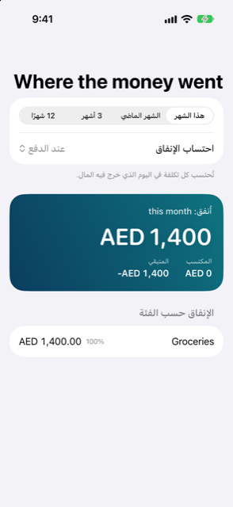

الدليل › نظرة عامة
أين ذهب المال
الإنفاق حسب الفئة، هذا الشهر والماضي.
أين ذهب المال هو تقرير الإنفاق في Damla. يعرض ما أنفقته، وما كسبته، وما بقي، على النطاق الذي تختاره، حسب الشهر وحسب الفئة.

متى تستخدمه
- تريد رؤية أكبر تكاليف هذا الشهر، وكيف تقارن بالشهر الماضي.
- تريد رؤية سنة من الإنفاق حسب الشهر، لتكتشف المواسم الثقيلة.
- صحّحت معاملة وتريد التحقق من كيف تغيّرت تقاريرك.
- تريد رؤية ما دخل بجانب ما خرج، في شاشة واحدة.
خطوة بخطوة
- افتح تبويب نظرة عامة (الرابع من بين خمسة تبويبات).
- انقر أين ذهب المال في أعلى نظرة عامة. الصف يعرض أصلًا إنفاق هذا الشهر، وإنفاق الشهر الماضي.
- اختر نطاقًا في الأعلى: هذا الشهر، الشهر الماضي، 3 أشهر أو 12 شهرًا.
- تحت النطاق، استخدم احتساب الإنفاق لاختيار اليوم الذي تنتمي إليه التكلفة.
- اقرأ البطاقة الكبيرة: أُنفق للنطاق، مع المكتسب والمتبقي بجانبها.
- مرّر لترى الرسوم والقوائم، الموصوفة أدناه.
كيف يُحتسب الإنفاق
منتقيان يقعان في أعلى التقرير: النطاق، واحتساب الإنفاق.
عند الدفع يحتسب كل تكلفة في اليوم الذي غادر فيه المال. شراء بالبطاقة يُحتسب في اليوم الذي استخدمت فيه البطاقة، لا في اليوم الذي سددت فيه فاتورة البطاقة. هذا هو المنظور المعتاد لما حدث.
عند الاستحقاق يوزّع التكاليف السنوية أو المدفوعة مسبقًا على الأشهر التي تغطيها — الأشهر التي حددتها للقيد كالفترة التي يدفع عنها. الفترة التي تبدأ في اليوم الأول من شهر وتنتهي في اليوم الأخير من شهر تُحتسب بأجزاء متساوية. وأي فترة أخرى تُحتسب بنسبة أيامها في كل شهر. وهذا هو المنظور المعتاد لمقارنة الأشهر، حتى لا تسيطر دفعة غير عادية على شهر.
ما هو على الشاشة
- بطاقة أُنفق: إجمالي ما أُنفق في النطاق، مع المكتسب والمتبقي (المكتسب ناقص أُنفق) بجانبها.
- حسب الشهر: رسم أعمدة للإنفاق، عمود لكل شهر. يظهر عندما يحتوي النطاق على إنفاق أو دخل في أكثر من شهر.
- رسم دائري مجوّف: كيف يتوزع الإنفاق على الفئات، أكبر الأجزاء أولًا. يظهر عندما توجد أكثر من فئة إنفاق.
- الإنفاق حسب الفئة: قائمة بمجموع كل فئة ونصيبها من الإنفاق كنسبة مئوية، الأكبر أولًا. الفئات ذات الفئات الفرعية تعرض أجزاءها تحتها.
- الدخل: ما دخل، حسب فئات الدخل. يظهر هذا القسم فقط عندما يحتوي النطاق على دخل.
- أُنفق من أجل: المال الذي سجّلته كإنفاق لشخص آخر، مرتّب حسب ذلك الشخص. يظهر هذا القسم فقط عندما تكون قد سجّلت إنفاقًا لشخص ما.
إذا لم يُنفَق شيء في الفترة، تقول القائمة لا يوجد إنفاق في هذه الفترة.
حساب واحد في كل مرة
يُفتح التقرير نفسه أيضًا لحساب واحد. في تبويب الحسابات، افتح حسابًا يعرض بطاقة — بنك، مدخرات، محفظة، بطاقة ائتمان أو قرض. انقر البطاقة لتقلبها، ثم انقر الإنفاق على ظهرها. يغطي التقرير حينئذٍ القيود التي تمس ذلك الحساب فقط، ويكون اسم الحساب هو عنوان الصفحة. الاستثمارات والمشتريات المرحّلة والأشخاص تفتح شاشاتها الخاصة بدلًا من ذلك.
جيد أن تعرف
- يمكنك إضافة الفئات وإعادة تسميتها وإزالتها في الإعدادات تحت الفئات. انقر إضافة، وانقر فئة وعدّل الاسم، أو اسحبها وانقر إزالة. التقرير يتبع تغييراتك.
- مشتريات البطاقة تُحتسب في اليوم الذي استخدمت فيه البطاقة، لا عندما سُدد كشف الحساب. نقل المال بين حساباتك الخاصة ليس أبدًا إنفاقًا وليس أبدًا دخلًا.
- يرسم الرسم الدائري المجوّف على الأكثر أكبر ثماني فئات. أي فئات أخرى تظل تظهر في الإجماليات وفي القائمة أدناه.
- هذا التقرير سجلّ لما حدث. يقدّم معلومات، لا نصيحة عمّا ينبغي إنفاقه.
مواضيع ذات صلة
هل هناك شيء غير واضح أو ناقص؟ اكتب إلى support@raveniq.ai واذكر الصفحة.